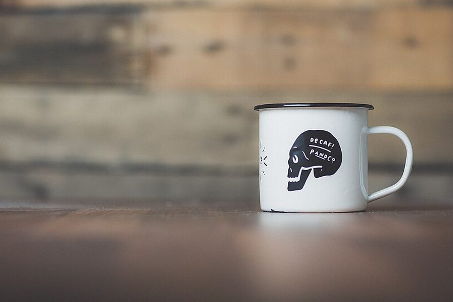
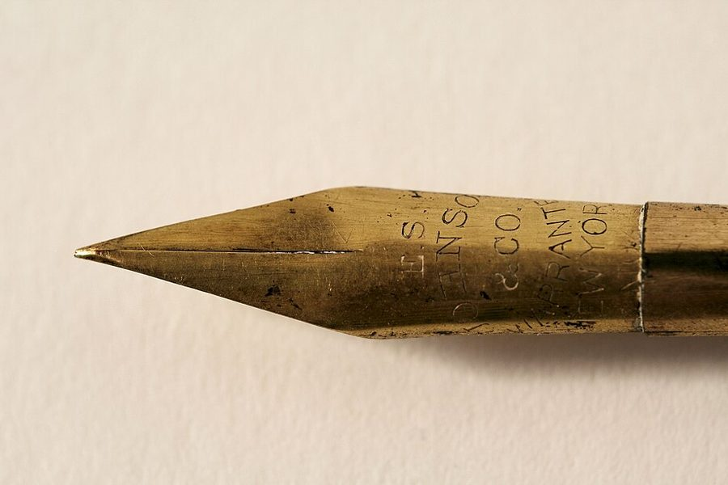
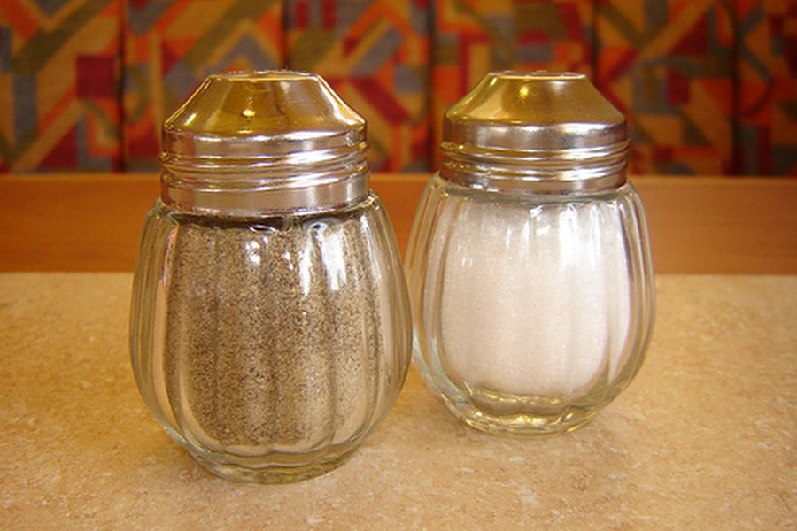
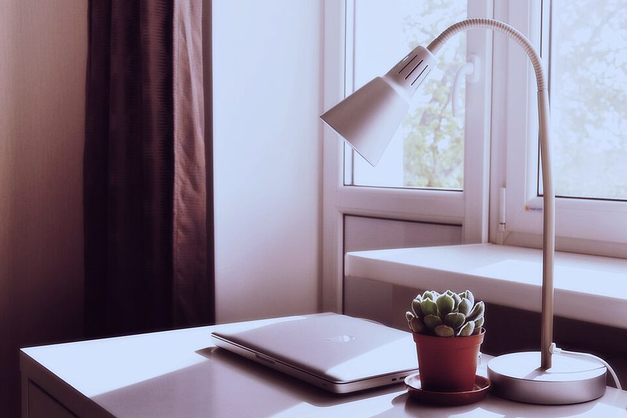

בחרו חפץ אחד מהתמונות שכאן, וספרו עליו סיפור מעניין / מפתיע / מסקרן בסרטון של עד דקה.
מועד הגשה 8.10.2026
עד דקה. לא שנייה יותר.
שוט אחד רצוף, או כמה שוטים שמורכבים יחד. שתי הדרכים לגיטימיות לגמרי.
מותר לערוך, ומותר להיעזר בחבר שיודע לערוך. הסיפור צריך להישאר שלכם.
החפצים האלה נמצאים כמעט בכל בית. צלמו את שלכם, או המציאו סיפור על זה שבתמונה.
חמישה חפצים. בחרו אחד, ותוכלו לומר לי את המספר שלו כשתגישו.




מעלים את הסרטון לטופס. הוא מגיע אליי ישירות, ואין צורך לשלוח שום דבר נוסף.
העלאת הסרטוןאם הטופס מבקש להתחבר — התחברו עם חשבון הגוגל של בית הספר, אותו חשבון שאתם משתמשים בו בכיתה. אם משהו לא עובד, אל תשלחו את הסרטון בדרך אחרת — פשוט תגידו לי ונסדר את זה יחד.